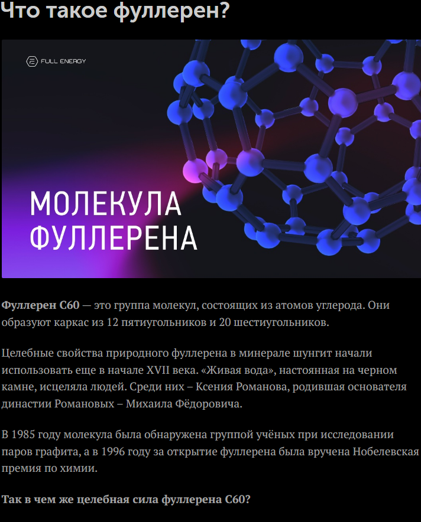

Фуллерен — это уникальная аллотропная форма углерода, молекула которой и др. напоминает футбольный мяч из шести- и пятиугольников. Это мощнейший антиоксидант, действующий в 100–1000 раз эффективнее известных аналогов. Фуллерены наноразмерны используются в медицине, косметике, электронике и материаловедении.

Основные факты о фуллеренах:
Строение: Полая замкнутая сфера из атомов углерода, названная в честь архитектора Ричарда Бакминстера Фуллера, создававшего «геодезические купола».
Свойства:
Получение: Фуллерены получают искусственным путем, однако они содержатся и в природном минерале шунгите.
Фуллерен — одно из самых перспективных направлений нанотехнологий, которое называют «молекулой будущего».